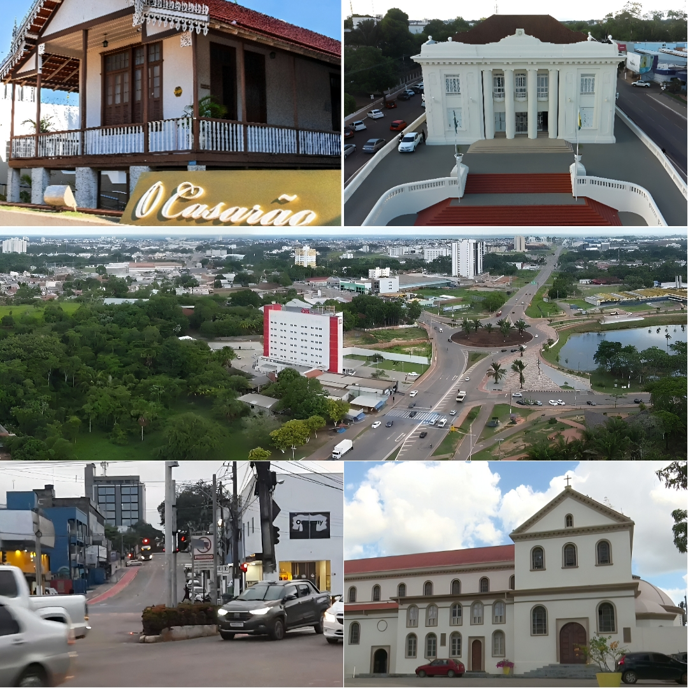
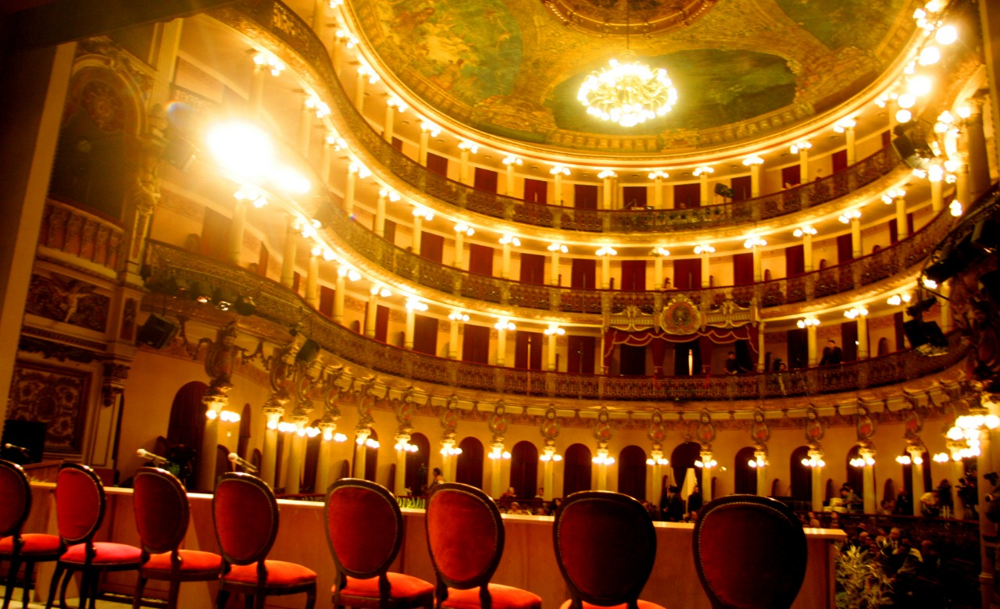
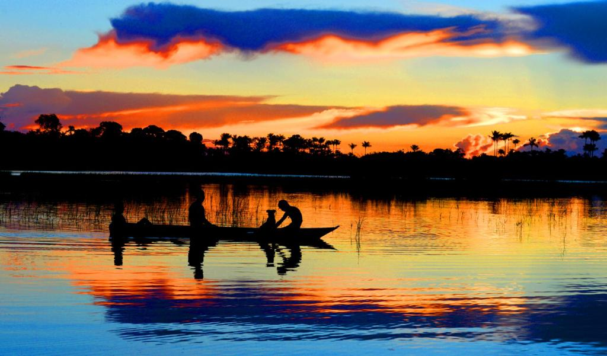
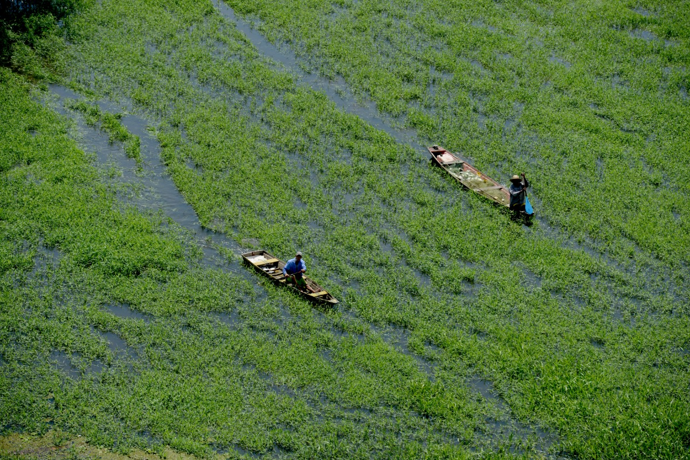

Terra de Chico Mendes, dos seringueiros e da floresta que resistiu. O Acre guarda a Amazônia mais intocada do Brasil — rios cristalinos, povos indígenas isolados e a história mais singular da República.

Rio Branco é a capital mais jovem entre as capitais amazônicas — fundada em 1882 como um seringal. A cidade cresceu às margens do Rio Acre, e sua história é inseparável do ciclo da borracha e dos seringueiros. Chico Mendes, o maior líder ambientalista do Brasil, nasceu no Acre. O estado foi brasileiro por escolha — foi comprado da Bolívia em 1903 pelo Tratado de Petrópolis — e os acreanos têm um orgulho peculiar e justificado de sua identidade.
O Acre não nasceu brasileiro. Era território boliviano habitado por seringueiros brasileiros que, em 1899, se revoltaram e proclamaram a "República do Acre". Depois de guerrilhas, combates e negociações diplomáticas, o Barão do Rio Branco negociou a compra do território por 2 milhões de libras esterlinas no Tratado de Petrópolis (1903). Hoje, 17 de novembro — o dia da incorporação — é feriado estadual. A história dos seringueiros e sua resistência ao desmatamento teve seu maior símbolo em Chico Mendes (1944–1988), assassinado por fazendeiros, que se tornou mártir ambiental de repercussão mundial.

CulturaO museu mais importante do Acre, que conta a saga dos seringueiros, a história do látex, a Revolução Acreana e a luta de Chico Mendes. Acervo rico e bem preservado sobre o ciclo da borracha.
 Cultura
CulturaA casa onde Chico Mendes viveu e foi assassinado em 1988 foi transformada em memorial. Um dos pontos mais emocionantes para visitação no Brasil — a história de um homem que mudou o mundo.

NaturezaUma linda praia de rio às margens do Rio Acre, dentro da própria cidade. Na época de seca (junho a outubro), a areia branca se revela com bares, churrasqueiras e o lazer da população local.

NaturezaUm dos parques mais remotos do Brasil, na fronteira com o Peru. Floresta primária intocada, povos indígenas em isolamento voluntário e espécies raras. Apenas para expedições organizadas.
A castanha-da-amazônia (também chamada castanha-do-pará) é a principal riqueza extrativista do Acre. Comunidades seringueiras colhem e beneficiam o produto, que é exportado para Europa e EUA como produto de floresta em pé.
O Acre ainda tem seringais em atividade. Projetos de beneficiamento do látex produzem preservativos, colchões e produtos médicos. A borracha voltou — sustentável, manejada pelas comunidades que sempre viveram dela.
O Acre é grande produtor de cupuaçu, açaí, pupunha e cacau nativo da floresta. Cooperativas de mulheres ribeirinhas produzem doces, cosméticos e chocolates que ganham mercados nacionais e internacionais.
Xapuri é uma das cidades mais significativas da Amazônia. Foi aqui que Chico Mendes — seringueiro, sindicalista e ambientalista — organizou os "empates" (bloqueios humanos ao desmatamento) e onde foi assassinado em 22 de dezembro de 1988. Hoje é destino de turismo histórico e ambiental, e o nome de Chico Mendes é conhecido em todos os continentes.
CulturaA casa simples onde Chico Mendes viveu, lutou e foi assassinado. Preservada como memorial, com fotos, documentos e objetos pessoais. Um lugar de reflexão profunda sobre a luta ambiental.
 Natureza
NaturezaO seringal histórico onde Chico Mendes organizou a resistência. Hoje é um projeto de ecoturismo comunitário — os próprios seringueiros guiam os visitantes pela floresta e ensinam a fazer a sangria da seringueira.

Segunda maior cidade do Acre, às margens do Rio Juruá — um dos mais sinuosos do mundo. Cruzeiro do Sul está no coração do Vale do Juruá, região de floresta primária densa, povos indígenas isolados e uma biodiversidade extraordinária. O destino mais remoto e fascinante do estado.

Brasiléia fica na fronteira com a Bolívia, unida à cidade boliviana de Cobija pela Ponte Internacional da Integração. A região tem um comércio fronteiriço ativo e é ponto de partida para expedições ao Parque Nacional da Serra do Divisor — um dos mais inacessíveis e biodiversos do Brasil.
Vale do Rio Tarauacá, com comunidades ribeirinhas e produção de castanha. Região de floresta densa e povos Yawanapi.
Às margens do Rio Envira, com pesca esportiva e ecoturismo incipiente em florestas virgens do Alto Juruá.
A cidade mais ocidental do Brasil. Porta de entrada para o Parque Nacional da Serra do Divisor e para o Peru.
Às margens do Rio Iaco, importante polo madeireiro e pecuário com belezas naturais pouco exploradas pelo turismo.
Acre tem 22 municípios. Explore cada canto desse território único.
Capital e coração cultural do Acre; Gameleira, Palácio Rio Branco e orla do Rio Acre.
Segunda cidade do Acre, no Vale do Juruá — porta para o Alto Acre e região indígena.
Base da Reserva Extrativista Chico Mendes, berço do movimento seringueiro.
Cidade de Chico Mendes — artesanato de borracha, museu e trilhas pelo seringal.
Fronteira Brasil-Bolívia, acesso para o ecoturismo nos contrafortes andinos.
Rio Tarauacá com pesca, comunidades indígenas Huni Kuĩ (Kaxinawá).
Reserva Extrativista do Cazumbá-Iracema, uma das maiores do estado.
Extremo sul do Acre, comunidade Yawanapi e Parque Nacional Serra do Divisor.
Parque Nacional Serra do Divisor — maior parque do Acre, montanhas e rios prístinos.
Porta da Floresta Nacional do Breu, biodiversidade exuberante.
Pecuária e pequenas comunidades ribeirinhas no baixo Acre.
Colonização recente, agropecuária familiar e fronteira com Rondônia.
Tríplice fronteira Brasil-Peru-Bolívia, reserva indígena Mamoadate.
Reserva Extrativista Chico Mendes e praias do Rio Acre próximas à capital.
Terra Indígena Kaxinawá do Rio Jordão, isolamento e biodiversidade singular.
Fronteira com o Peru, reservas indígenas e rio Purus em estado prístino.
Créditos fotográficos: Wikimedia Commons (CC BY-SA) · © Chico Batata (uso autorizado) · Fotos podem ser de localidades próximas para fins ilustrativos.